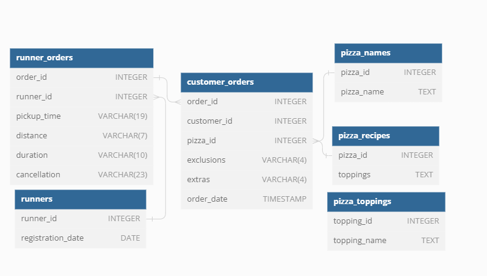

Case Study #2 - Pizza Runner

Introduction
Did you know that over 115 million kilograms of pizza is consumed daily worldwide??? (Well according to Wikipedia anyway…)
Danny was scrolling through his Instagram feed when something really caught his eye - “80s Retro Styling and Pizza Is The Future!”
Danny was sold on the idea, but he knew that pizza alone was not going to help him get seed funding to expand his new Pizza Empire - so he had one more genius idea to combine with it - he was going to Uberize it - and so Pizza Runner was launched!
Danny started by recruiting “runners” to deliver fresh pizza from Pizza Runner Headquarters (otherwise known as Danny’s house) and also maxed out his credit card to pay freelance developers to build a mobile app to accept orders from customers.
Available Data
Because Danny had a few years of experience as a data scientist - he was very aware that data collection was going to be critical for his business’ growth.
He has prepared for us an entity relationship diagram of his database design but requires further assistance to clean his data and apply some basic calculations so he can better direct his runners and optimise Pizza Runner’s operations.
All datasets exist within the pizza_runner database schema - be sure to include this reference within your SQL scripts as you start exploring the data and answering the case study questions.
Entity Relationship Diagram

Table 1: runners
The runners table shows the registration_date for each new runner
| runner_id | registration_date |
|---|---|
| 1 | 2021-01-01 |
| 2 | 2021-01-03 |
| 3 | 2021-01-08 |
| 4 | 2021-01-15 |
Table 2: customer_orders
Customer pizza orders are captured in the customer_orders table with 1 row for each individual pizza that is part of the order.
The pizza_id relates to the type of pizza which was ordered whilst the exclusions are the ingredient_id values which should be removed from the pizza and the extras are the ingredient_id values which need to be added to the pizza.
Note that customers can order multiple pizzas in a single order with varying exclusions and extras values even if the pizza is the same type!
The exclusions and extras columns will need to be cleaned up before using them in your queries.
| order_id | customer_id | pizza_id | exclusions | extras | order_time |
|---|---|---|---|---|---|
| 1 | 101 | 1 | 2021-01-01 18:05:02 | ||
| 2 | 101 | 1 | 2021-01-01 19:00:52 | ||
| 3 | 102 | 1 | 2021-01-02 23:51:23 | ||
| 3 | 102 | 2 | NaN | 2021-01-02 23:51:23 | |
| 4 | 103 | 1 | 4 | 2021-01-04 13:23:46 | |
| 4 | 103 | 1 | 4 | 2021-01-04 13:23:46 | |
| 4 | 103 | 2 | 4 | 2021-01-04 13:23:46 | |
| 5 | 104 | 1 | null | 1 | 2021-01-08 21:00:29 |
| 6 | 101 | 2 | null | null | 2021-01-08 21:03:13 |
| 7 | 105 | 2 | null | 1 | 2021-01-08 21:20:29 |
| 8 | 102 | 1 | null | null | 2021-01-09 23:54:33 |
| 9 | 103 | 1 | 4 | 1, 5 | 2021-01-10 11:22:59 |
| 10 | 104 | 1 | null | null | 2021-01-11 18:34:49 |
| 10 | 104 | 1 | 2, 6 | 1, 4 | 2021-01-11 18:34:49 |
Table 3: runner_orders
After each orders are received through the system - they are assigned to a runner - however not all orders are fully completed and can be cancelled by the restaurant or the customer.
The pickup_time is the timestamp at which the runner arrives at the Pizza Runner headquarters to pick up the freshly cooked pizzas. The distance and duration fields are related to how far and long the runner had to travel to deliver the order to the respective customer.
There are some known data issues with this table so be careful when using this in your queries - make sure to check the data types for each column in the schema SQL!
| order_id | runner_id | pickup_time | distance | duration | cancellation |
|---|---|---|---|---|---|
| 1 | 1 | 2021-01-01 18:15:34 | 20km | 32 minutes | |
| 2 | 1 | 2021-01-01 19:10:54 | 20km | 27 minutes | |
| 3 | 1 | 2021-01-03 00:12:37 | 13.4km | 20 mins | NaN |
| 4 | 2 | 2021-01-04 13:53:03 | 23.4 | 40 | NaN |
| 5 | 3 | 2021-01-08 21:10:57 | 10 | 15 | NaN |
| 6 | 3 | null | null | null | Restaurant Cancellation |
| 7 | 2 | 2020-01-08 21:30:45 | 25km | 25mins | null |
| 8 | 2 | 2020-01-10 00:15:02 | 23.4 km | 15 minute | null |
| 9 | 2 | null | null | null | Customer Cancellation |
| 10 | 1 | 2020-01-11 18:50:20 | 10km | 10 minutes | null |
Table 4: pizza_names
At the moment - Pizza Runner only has 2 pizzas available the Meat Lovers or Vegetarian!
| pizza_id | pizza_name |
|---|---|
| 1 | Meat Lovers |
| 2 | Vegetarian |
Table 5: pizza_recipes
Each pizza_id has a standard set of toppings which are used as part of the pizza recipe.
| pizza_id | toppings |
|---|---|
| 1 | 1, 2, 3, 4, 5, 6, 8, 10 |
| 2 | 4, 6, 7, 9, 11, 12 |
Table 6: pizza_toppings
This table contains all of the topping_name values with their corresponding topping_id value
| topping_id | topping_name |
|---|---|
| 1 | Bacon |
| 2 | BBQ Sauce |
| 3 | Beef |
| 4 | Cheese |
| 5 | Chicken |
| 6 | Mushrooms |
| 7 | Onions |
| 8 | Pepperoni |
| 9 | Peppers |
| 10 | Salami |
| 11 | Tomatoes |
| 12 | Tomato Sauce |
Interactive SQL Session
The Dataset for this case study can be accessed from here. I will be using MySQL to solve this case study. In order to solve yourself this case study, simply go to the above link and choose MySQL Dialect (version > 8, if using MySQL version higher than 8 locally), copy & paste the Database schema into MySQL.
Here is the snapshot of it.
CREATE SCHEMA pizza_runner;
USE pizza_runner;
DROP TABLE IF EXISTS runners;
CREATE TABLE runners (
`runner_id` INTEGER,
`registration_date` DATE
);
INSERT INTO runners
(`runner_id`, `registration_date`)
VALUES
(1, '2021-01-01'),
(2, '2021-01-03'),
(3, '2021-01-08'),
(4, '2021-01-15');
DROP TABLE IF EXISTS customer_orders;
CREATE TABLE customer_orders (
`order_id` INTEGER,
`customer_id` INTEGER,
`pizza_id` INTEGER,
`exclusions` VARCHAR(4),
`extras` VARCHAR(4),
`order_time` TIMESTAMP
);
INSERT INTO customer_orders
(`order_id`, `customer_id`, `pizza_id`, `exclusions`, `extras`, `order_time`)
VALUES
('1', '101', '1', '', '', '2020-01-01 18:05:02'),
('2', '101', '1', '', '', '2020-01-01 19:00:52'),
('3', '102', '1', '', '', '2020-01-02 23:51:23'),
('3', '102', '2', '', NULL, '2020-01-02 23:51:23'),
('4', '103', '1', '4', '', '2020-01-04 13:23:46'),
('4', '103', '1', '4', '', '2020-01-04 13:23:46'),
('4', '103', '2', '4', '', '2020-01-04 13:23:46'),
('5', '104', '1', 'null', '1', '2020-01-08 21:00:29'),
('6', '101', '2', 'null', 'null', '2020-01-08 21:03:13'),
('7', '105', '2', 'null', '1', '2020-01-08 21:20:29'),
('8', '102', '1', 'null', 'null', '2020-01-09 23:54:33'),
('9', '103', '1', '4', '1, 5', '2020-01-10 11:22:59'),
('10', '104', '1', 'null', 'null', '2020-01-11 18:34:49'),
('10', '104', '1', '2, 6', '1, 4', '2020-01-11 18:34:49');
DROP TABLE IF EXISTS runner_orders;
CREATE TABLE runner_orders (
`order_id` INTEGER,
`runner_id` INTEGER,
`pickup_time` VARCHAR(19),
`distance` VARCHAR(7),
`duration` VARCHAR(10),
`cancellation` VARCHAR(23)
);
INSERT INTO runner_orders
(`order_id`, `runner_id`, `pickup_time`, `distance`, `duration`, `cancellation`)
VALUES
('1', '1', '2020-01-01 18:15:34', '20km', '32 minutes', ''),
('2', '1', '2020-01-01 19:10:54', '20km', '27 minutes', ''),
('3', '1', '2020-01-03 00:12:37', '13.4km', '20 mins', NULL),
('4', '2', '2020-01-04 13:53:03', '23.4', '40', NULL),
('5', '3', '2020-01-08 21:10:57', '10', '15', NULL),
('6', '3', 'null', 'null', 'null', 'Restaurant Cancellation'),
('7', '2', '2020-01-08 21:30:45', '25km', '25mins', 'null'),
('8', '2', '2020-01-10 00:15:02', '23.4 km', '15 minute', 'null'),
('9', '2', 'null', 'null', 'null', 'Customer Cancellation'),
('10', '1', '2020-01-11 18:50:20', '10km', '10minutes', 'null');
DROP TABLE IF EXISTS pizza_names;
CREATE TABLE pizza_names (
`pizza_id` INTEGER,
`pizza_name` TEXT
);
INSERT INTO pizza_names
(`pizza_id`, `pizza_name`)
VALUES
(1, 'Meatlovers'),
(2, 'Vegetarian');
DROP TABLE IF EXISTS pizza_recipes;
CREATE TABLE pizza_recipes (
`pizza_id` INTEGER,
`toppings` TEXT
);
INSERT INTO pizza_recipes
(`pizza_id`, `toppings`)
VALUES
(1, '1, 2, 3, 4, 5, 6, 8, 10'),
(2, '4, 6, 7, 9, 11, 12');
DROP TABLE IF EXISTS pizza_toppings;
CREATE TABLE pizza_toppings (
`topping_id` INTEGER,
`topping_name` TEXT
);
INSERT INTO pizza_toppings
(`topping_id`, `topping_name`)
VALUES
(1, 'Bacon'),
(2, 'BBQ Sauce'),
(3, 'Beef'),
(4, 'Cheese'),
(5, 'Chicken'),
(6, 'Mushrooms'),
(7, 'Onions'),
(8, 'Pepperoni'),
(9, 'Peppers'),
(10, 'Salami'),
(11, 'Tomatoes'),
(12, 'Tomato Sauce');Case Study Questions
This case study has LOTS of questions - they are broken up by area of focus including:
- Pizza Metrics
- Runner and Customer Experience
- Ingredient Optimisation
- Pricing and Ratings
- Bonus DML Challenges (DML = Data Manipulation Language)
Each of the following case study questions can be answered using a single SQL statement.
Again, there are many questions in this case study - please feel free to pick and choose which ones you’d like to try!
Before you start writing your SQL queries however - you might want to investigate the data, you may want to do something with some of those null values and data types in the customer_orders and runner_orders tables!
A. Pizza Metrics
How many pizzas were ordered?
How many unique customer orders were made?
How many successful orders were delivered by each runner?
How many of each type of pizza was delivered?
How many Vegetarian and Meatlovers were ordered by each customer?
What was the maximum number of pizzas delivered in a single order?
For each customer, how many delivered pizzas had at least 1 change and how many had no changes?
How many pizzas were delivered that had both exclusions and extras?
What was the total volume of pizzas ordered for each hour of the day?
What was the volume of orders for each day of the week?
B. Runner and Customer Experience
How many runners signed up for each 1 week period? (i.e. week starts
2021-01-01).What was the average time in minutes it took for each runner to arrive at the Pizza Runner HQ to pickup the order?
Is there any relationship between the number of pizzas and how long the order takes to prepare?
What was the average distance travelled for each customer?
What was the difference between the longest and shortest delivery times for all orders?
What was the average speed for each runner for each delivery and do you notice any trend for these values?
What is the successful delivery percentage for each runner?
C. Ingredient Optimisation
What are the standard ingredients for each pizza?
What was the most commonly added extra?
What was the most common exclusion?
Generate an order item for each record in the
customers_orderstable in the format of one of the following:Meat LoversMeat Lovers - Exclude BeefMeat Lovers - Extra BaconMeat Lovers - Exclude Cheese, Bacon - Extra Mushroom, Peppers
Generate an alphabetically ordered comma separated ingredient list for each pizza order from the
customer_orderstable and add a 2x in front of any relevant ingredientsFor example: "Meat Lovers: 2xBacon, Beef, ... , Salami".
What is the total quantity of each ingredient used in all delivered pizzas sorted by most frequent first?
D. Pricing and Ratings
If a Meat Lovers pizza costs $12 and Vegetarian costs $10 and there were no charges for changes - how much money has Pizza Runner made so far if there are no delivery fees?
What if there was an additional $1 charge for any pizza extras?
- Add cheese is $1 extra
The Pizza Runner team now wants to add an additional ratings system that allows customers to rate their runner, how would you design an additional table for this new dataset - generate a schema for this new table and insert your own data for ratings for each successful customer order between 1 to 5.
Using your newly generated table - can you join all of the information together to form a table which has the following information for successful deliveries?
customer_idorder_idrunner_idratingorder_timepickup_timeTime between order and pickupDelivery durationAverage speedTotal number of pizzas
If a Meat Lovers pizza was $12 and Vegetarian $10 fixed prices with no cost for extras and each runner is paid $0.30 per kilometre traveled - how much money does Pizza Runner have left over after these deliveries?
E. Bonus Questions
If Danny wants to expand his range of pizzas - how would this impact the existing data design? Write an INSERT statement to demonstrate what would happen if a new Supreme pizza with all the toppings was added to the Pizza Runner menu?
Let’s start solving them.
Performing the Data Cleaning/ Transformations first!
Cleaning Customer_Orders Table
Dropping the customer_orders_temp table if already exists otherwise creating it.
DROP TABLE IF EXISTS customer_orders_temp
CREATE TEMPORARY TABLE customer_orders_temp AS
SELECT order_id, customer_id, pizza_id,
CASE WHEN exclusions IS NULL OR exclusions LIKE 'null' THEN ''
ELSE exclusions END AS exclusions,
CASE WHEN extras IS NULL OR extras LIKE 'null' THEN ''
ELSE extras END AS extras,
order_time
FROM customer_orders;Output:
| order_id | customer_id | pizza_id | exclusions | extras | order_time |
|---|---|---|---|---|---|
| 1 | 101 | 1 | 2020-01-01 18:05:02 | ||
| 2 | 101 | 1 | 2020-01-01 19:00:52 | ||
| 3 | 102 | 1 | 2020-01-02 23:51:23 | ||
| 3 | 102 | 2 | 2020-01-02 23:51:23 | ||
| 4 | 103 | 1 | 4 | 2020-01-04 13:23:46 | |
| 4 | 103 | 1 | 4 | 2020-01-04 13:23:46 | |
| 4 | 103 | 2 | 4 | 2020-01-04 13:23:46 | |
| 5 | 104 | 1 | 1 | 2020-01-08 21:00:29 | |
| 6 | 101 | 2 | 2020-01-08 21:03:13 | ||
| 7 | 105 | 2 | 1 | 2020-01-08 21:20:29 | |
| 8 | 102 | 1 | 2020-01-09 23:54:33 | ||
| 9 | 103 | 1 | 4 | 1, 5 | 2020-01-10 11:22:59 |
| 10 | 104 | 1 | 2020-01-11 18:34:49 | ||
| 10 | 104 | 1 | 2, 6 | 1, 4 | 2020-01-11 18:34:49 |
Cleaning Runner_Orders Table
Dropping the runner_orders_temp table if already exists otherwise creating it.
DROP TABLE IF EXISTS runner_orders_temp
CREATE TEMPORARY TABLE runner_orders_temp AS
SELECT order_id, runner_id,
CAST(CASE WHEN pickup_time LIKE "null" THEN NULL ELSE pickup_time END AS DATETIME) AS pickup_time,
CAST(CASE WHEN distance LIKE "null" THEN NULL WHEN distance LIKE '%km' THEN TRIM('km' FROM distance)
ELSE distance END AS FLOAT) AS distance,
CAST(CASE WHEN duration LIKE "null" THEN NULL
WHEN duration LIKE '%minutes' THEN TRIM('minutes' FROM duration)
WHEN duration LIKE '%minute' THEN TRIM('minute' FROM duration)
WHEN duration LIKE '%mins' THEN TRIM('mins' FROM duration)
ELSE duration END AS FLOAT) AS duration,
CASE WHEN cancellation IN ('', 'null', 'NaN') THEN NULL
ELSE cancellation END AS cancellation
FROM runner_orders;Changing the Data Types of columns in runner_orders TABLE
ALTER TABLE runner_orders_temp
MODIFY COLUMN pickup_time DATETIME,
MODIFY COLUMN distance FLOAT,
MODIFY COLUMN duration FLOAT;Output:
| order_id | runner_id | pickup_time | distance | duration | cancellation |
|---|---|---|---|---|---|
| 1 | 1 | 2020-01-01 18:15:34 | 20 | 32 | |
| 2 | 1 | 2020-01-01 19:10:54 | 20 | 27 | |
| 3 | 1 | 2020-01-03 00:12:37 | 13.4 | 20 | |
| 4 | 2 | 2020-01-04 13:53:03 | 23.4 | 40 | |
| 5 | 3 | 2020-01-08 21:10:57 | 10 | 15 | |
| 6 | 3 | Restaurant Cancellation | |||
| 7 | 2 | 2020-01-08 21:30:45 | 25 | 25 | |
| 8 | 2 | 2020-01-10 00:15:02 | 23.4 | 15 | |
| 9 | 2 | Customer Cancellation | |||
| 10 | 1 | 2020-01-11 18:50:20 | 10 | 10 |
A. Pizza Metrics
1. How many pizzas were ordered?
SELECT COUNT(order_id) AS pizza_cnt
FROM customer_orders_temp;Output:
| pizza_cnt |
|---|
| 14 |
Analysis of Total Pizzas Ordered
Pizza Order Overview:
- A total of 14 pizzas were ordered during the period under consideration.
- Understanding the volume of pizza orders helps in assessing demand and operational requirements for Pizza Runner.
2. How many unique customer orders were made?
SELECT COUNT(DISTINCT order_id) AS unique_orders
FROM customer_orders_temp;Output: | unique_orders | |—————| | 10 |
Analysis of Unique Customer Orders
Insights into Customer Order Frequency:
- A total of 10 unique customer orders were made during the specified period.
- Understanding the frequency of unique orders provides insights into customer engagement and the overall demand for Pizza Runner’s services.
3. How many successful orders were delivered by each runner?
SELECT
runner_id,
COUNT(order_id) AS `successful_delivery`
FROM runner_orders
WHERE distance != 0
GROUP BY runner_id;Output:
| runner_id | successful_delivery |
|---|---|
| 1 | 4 |
| 2 | 3 |
| 3 | 1 |
Analysis of Successful Deliveries by Runners
Efficiency in Order Delivery:
- Runner 1 completed the highest number of successful deliveries, with a total of 4 orders fulfilled.
- Runner 2 follows closely behind, with 3 successful deliveries.
- Runner 3 completed 1 successful delivery during the specified period.
4. How many of each type of pizza was delivered?
SELECT
pizza_name,
COUNT(runner_orders_temp.order_id) as pizza_cnt
FROM customer_orders_temp
JOIN runner_orders_temp ON customer_orders_temp.order_id = runner_orders_temp.order_id
JOIN pizza_names ON pizza_names.pizza_id = customer_orders_temp.pizza_id
WHERE distance != 0
GROUP BY pizza_name;Output:
| pizza_name | pizza_cnt |
|---|---|
| Meatlovers | 9 |
| Vegetarian | 3 |
Analysis of Pizza Deliveries by Type
Distribution of Pizza Types:
- Meat Lovers pizza was the most frequently delivered, with a total of 9 orders fulfilled.
- Vegetarian pizza accounted for a smaller portion of deliveries, with 3 orders fulfilled.
5. How many Vegetarian and Meatlovers were ordered by each customer?
SELECT
customer_id,
pizza_name,
COUNT(order_id) as order_cnt
FROM customer_orders_temp
JOIN pizza_names ON customer_orders_temp.pizza_id = pizza_names.pizza_id
GROUP BY customer_id, pizza_name
ORDER BY customer_id, pizza_name;Output:
| customer_id | pizza_name | order_cnt |
|---|---|---|
| 101 | Meatlovers | 2 |
| 101 | Vegetarian | 1 |
| 102 | Meatlovers | 2 |
| 102 | Vegetarian | 1 |
| 103 | Meatlovers | 3 |
| 103 | Vegetarian | 1 |
| 104 | Meatlovers | 3 |
| 105 | Vegetarian | 1 |
Analysis of Pizza Orders by Customer
Customer Pizza Preferences:
- Customer 101 ordered 2 Meatlovers pizzas and 1 Vegetarian pizza, indicating a preference for both varieties.
- Similarly, Customer 102 ordered 2 Meatlovers pizzas and 1 Vegetarian pizza, suggesting a balanced preference for different pizza types.
- Customer 103 predominantly ordered Meatlovers pizzas, with 3 orders, and also ordered 1 Vegetarian pizza, indicating a preference for meat-based options but also an interest in vegetarian choices.
- Customer 104 ordered 3 Meatlovers pizzas, indicating a strong preference for this type, while Customer 105 ordered 1 Vegetarian pizza, suggesting a preference for meat-free options.
6. What was the maximum number of pizzas delivered in a single order?
SELECT customer_orders_temp.order_id,
COUNT(runner_orders_temp.order_id) as pizza_cnt
FROM customer_orders_temp
JOIN runner_orders_temp
ON customer_orders_temp.order_id = runner_orders_temp.order_id
GROUP BY customer_orders_temp.order_id
ORDER BY pizza_cnt DESC;Output:
| order_id | pizza_cnt |
|---|---|
| 4 | 3 |
| 3 | 2 |
| 10 | 2 |
| 1 | 1 |
| 2 | 1 |
| 5 | 1 |
| 6 | 1 |
| 7 | 1 |
| 8 | 1 |
| 9 | 1 |
Analysis of Maximum Pizzas Delivered in a Single Order
Order Size Overview:
- Order ID 4 recorded the highest number of pizzas delivered in a single order, with 3 pizzas.
- Orders 3 and 10 followed, each consisting of 2 pizzas, indicating moderate order sizes.
- Several orders, including IDs 1, 2, 5, 6, 7, 8, and 9, were comprised of a single pizza, representing smaller order sizes.
7. For each customer, how many delivered pizzas had at least 1 change and how many had no changes?
SELECT
customer_orders_temp.customer_id,
SUM(CASE WHEN exclusions <> '' OR extras <> '' THEN 1 ELSE 0 END) AS 'Change',
SUM(CASE WHEN exclusions = '' AND extras = '' THEN 1 ELSE 0 END) AS 'No_Change'
FROM customer_orders_temp
JOIN runner_orders_temp ON customer_orders_temp.order_id = runner_orders_temp.order_id
WHERE runner_orders_temp.distance != 0
GROUP BY customer_orders_temp.customer_id;Output:
| customer_id | change | no_change |
|---|---|---|
| 101 | 0 | 2 |
| 102 | 0 | 3 |
| 103 | 3 | 0 |
| 104 | 2 | 1 |
| 105 | 1 | 0 |
Analysis of Pizza Orders with Changes
Change vs. No Change:
- Customer 101 and Customer 102 placed orders without any modifications, indicating a preference for standard pizza options without exclusions or extras.
- Customer 103 exclusively ordered pizzas with modifications, suggesting a preference for customized or personalized options tailored to specific dietary preferences or taste preferences.
- Customer 104 had a mix of orders with and without changes, indicating a varied preference for both standard and customized pizza options.
- Customer 105 ordered pizzas with at least one change, reflecting a preference for personalized pizza options.
8. How many pizzas were delivered that had both exclusions and extras?
SELECT
customer_orders_temp.customer_id,
SUM(CASE WHEN exclusions != '' AND extras != '' THEN 1 ELSE 0 END)
AS 'pizza_with_exclusions_and_extras'
FROM customer_orders_temp
JOIN runner_orders_temp ON customer_orders_temp.order_id = runner_orders_temp.order_id
WHERE runner_orders_temp.pickup_time IS NOT NULL AND exclusions != '' AND extras != ''
GROUP BY customer_orders_temp.customer_id
ORDER BY SUM(CASE WHEN exclusions != '' AND extras != '' THEN 1 ELSE 0 END) DESC;Output:
| customer_id | pizza_with_exclusions_and_extras |
|---|---|
| 104 | 1 |
Analysis of Pizza Orders with Both Exclusions and Extras
Pizza Customization Trends:
- Customer 104 placed an order that included both exclusions and extras, indicating a preference for a customized pizza with specific modifications to the standard recipe.
9. What was the total volume of pizzas ordered for each hour of the day?
SELECT
HOUR(order_time) as 'hour',
COUNT(order_id)
FROM customer_orders_temp
GROUP BY HOUR(order_time)
ORDER BY HOUR(order_time);Output:
| hour | order_cnt |
|---|---|
| 11 | 1 |
| 13 | 3 |
| 18 | 3 |
| 19 | 1 |
| 21 | 3 |
| 23 | 3 |
Analysis of Pizza Orders by Hour
Peak Ordering Hours:
- Pizza orders exhibit fluctuations throughout the day, with distinct peaks during specific hours.
- The busiest hours for pizza orders are observed between 1 PM and 3 PM, with a total volume of 3 orders during each hour.
10. What was the volume of orders for each day of the week?
SELECT
DAYNAME(order_time) as 'day_of_the_week',
COUNT(order_id)
FROM customer_orders_temp
GROUP BY DAYNAME(order_time)
ORDER BY DAYNAME(order_time) DESC;Output:
| day_of_the_week | order_cnt |
|---|---|
| Wednesday | 5 |
| Thursday | 3 |
| Saturday | 5 |
| Friday | 1 |
Analysis of Pizza Orders by Day of the Week
Weekday vs. Weekend Orders:
- Pizza orders exhibit variations based on the day of the week, with distinct patterns observed between weekdays and weekends.
- Wednesdays and Saturdays emerge as the busiest days for pizza orders, with 5 orders recorded on each day.
- Thursdays also demonstrate moderate order volume, with 3 orders placed, indicating consistent demand mid-week.
- Fridays recorded the lowest order volume, with only 1 order registered, suggesting a dip in demand at the end of the workweek.
B. Runner and Customer Experience
1. How many runners signed up for each 1 week period? (i.e. week starts 2021-01-01)
SELECT
WEEK(registration_date) AS 'week',
COUNT(runner_id) as num_of_runners
FROM runners
GROUP BY WEEK(registration_date);Output:
| week | num_of_runners |
|---|---|
| 0 | 1 |
| 1 | 2 |
| 2 | 1 |
Analysis of Runner Sign-ups by Week
Weekly Runner Acquisition:
- Runner sign-ups fluctuate across different weeks, indicating variations in recruitment efforts and market response over time.
- In Week 0 (starting from January 1, 2021), 1 runner signed up for Pizza Runner, marking the initial stage of recruitment.
- Runner sign-ups increased in Week 1, with 2 new runners joining the platform, suggesting a positive response to initial marketing and recruitment initiatives.
- However, in Week 2, the number of new sign-ups decreased to 1 runner, indicating potential challenges or fluctuations in recruitment effectiveness.
2. What was the average time in minutes it took for each runner to arrive at the Pizza Runner HQ to pickup the order?
WITH runners_pick_cte AS (
SELECT runner_id,
ROUND(AVG(TIMESTAMPDIFF(MINUTE, order_time, pickup_time)),2) AS avg_time
FROM runner_orders_temp
JOIN customer_orders_temp ON runner_orders_temp.order_id = customer_orders_temp.order_id
WHERE runner_orders_temp.distance != 0
GROUP BY runner_id
)
SELECT ROUND(AVG(avg_time),0) AS avg_pick_time
FROM runners_pick_cte;Output:
| avg_pickup_time |
|---|
| 16 |
Analysis of Average Pickup Time for Runners
Average Pickup Time:
- The average pickup time for all runners is approximately 16 minutes, indicating the typical duration between order placement and runner arrival at the Pizza Runner HQ.
- This metric provides insights into the efficiency of runner operations and the responsiveness of the delivery network in fulfilling customer orders promptly.
3. Is there any relationship between the number of pizzas and how long the order takes to prepare?
WITH order_count_cte AS (
SELECT
customer_orders_temp.order_id,
COUNT(customer_orders_temp.order_id) AS pizza_order_count,
ROUND(AVG(TIMESTAMPDIFF(MINUTE, order_time, pickup_time)),2) AS avg_time_to_prepare
FROM runner_orders_temp
JOIN customer_orders_temp ON runner_orders_temp.order_id = customer_orders_temp.order_id
WHERE pickup_time IS NOT NULL
GROUP BY customer_orders_temp.order_id
)
SELECT pizza_order_count, ROUND(AVG(avg_time_to_prepare),2) AS avg_time_to_prepare
FROM order_count_cte
GROUP BY pizza_order_count;Output:
| pizza_order_cnt | avg_time_to_prepare |
|---|---|
| 1 | 12.00 |
| 2 | 18.00 |
| 3 | 29.00 |
Analysis of Relationship Between Pizza Order Quantity and Preparation Time
Average Preparation Time by Pizza Quantity:
- Orders consisting of a single pizza have an average preparation time of approximately 12 minutes.
- Orders with two pizzas exhibit a slightly longer average preparation time, averaging around 18 minutes.
- Orders comprising three pizzas demonstrate the longest average preparation time, with an average of 29 minutes.
Potential Relationship:
- The analysis suggests a potential positive correlation between the quantity of pizzas in an order and the time required for preparation.
- As the number of pizzas in an order increases, the preparation time tends to lengthen, indicating a possible relationship between order complexity and processing duration.
4. What was the average distance travelled for each customer?
SELECT
customer_orders_temp.customer_id,
ROUND(AVG(distance),2) as avg_distance
FROM customer_orders_temp
JOIN runner_orders_temp ON customer_orders_temp.order_id = runner_orders_temp.order_id
WHERE runner_orders_temp.distance != 0
GROUP BY customer_orders_temp.customer_id;Output:
| customer_id | avg_distance |
|---|---|
| 101 | 20 |
| 102 | 16.73 |
| 103 | 23.4 |
| 104 | 10 |
| 105 | 25 |
Analysis of Average Distance Travelled by Customers
Average Distance Travelled:
- Customer 101 had an average delivery distance of 20 kilometers, indicating a moderate travel distance per order.
- Customer 102’s average delivery distance was approximately 16.73 kilometers, suggesting a slightly shorter travel distance compared to Customer 101.
- Customer 103 had the longest average delivery distance at 23.4 kilometers, indicating a greater geographical spread of delivery locations.
- Customer 104 had a relatively shorter average delivery distance of 10 kilometers, suggesting closer proximity to Pizza Runner HQ or a more localized customer base.
- Customer 105 had the highest average delivery distance of 25 kilometers, indicating deliveries to more distant locations or potentially serving customers across a wider geographic area.
5. What was the difference between the longest and shortest delivery times for all orders?
SELECT (MAX(duration) - MIN(duration)) AS diff
FROM runner_orders_temp;Output:
| diff |
|---|
| 30 |
Analysis of Difference Between Longest and Shortest Delivery Times
Delivery Time Range:
- The difference between the longest and shortest delivery times for all orders was 30 minutes.
- This variability indicates fluctuations in delivery durations across different orders, reflecting diverse factors such as distance, traffic conditions, and order complexity.
6. What was the average speed for each runner for each delivery and do you notice any trend for these values?
SELECT
RO.runner_id, RO.order_id,
ROUND(AVG(RO.distance/(RO.duration/60)),2) AS average_speed_in_kmph
FROM runner_orders AS RO
JOIN customer_orders AS CO ON RO.order_id = CO.order_id
WHERE RO.distance != 0
GROUP BY RO.runner_id, RO.order_id
ORDER BY RO.runner_id, RO.order_id ASC;Output:
| runner_id | order_id | average_speed_in_kmph |
|---|---|---|
| 1 | 1 | 37.5 |
| 1 | 2 | 44.44 |
| 1 | 3 | 40.2 |
| 1 | 10 | 60 |
| 2 | 4 | 35.1 |
| 2 | 7 | 60 |
| 2 | 8 | 93.6 |
| 3 | 5 | 40 |
Analysis of Average Speed for Each Runner
Runner-Specific Speed Variability:
- The average speed for each runner varied across different deliveries, reflecting differences in route distance, traffic conditions, and delivery durations.
- Runner 1 demonstrated varying speeds across deliveries, with average speeds ranging from 37.5 km/h to 60 km/h.
- Runner 2 exhibited notable speed disparities, with average speeds ranging from 35.1 km/h to 93.6 km/h.
- Runner 3 maintained a relatively consistent average speed of 40 km/h across deliveries.
7. What is the successful delivery percentage for each runner?
SELECT runner_id,
(ROUND(SUM(CASE WHEN duration IS NOT NULL THEN 1 ELSE 0 END)/COUNT(runner_id),2) * 100) AS percentage
FROM runner_orders_temp
GROUP BY runner_id;Output:
| runner_id | percentage |
|---|---|
| 1 | 100.00 |
| 2 | 75.00 |
| 3 | 50.00 |
Analysis of Successful Delivery Percentage for Each Runner
Runner-Specific Success Rates:
- Runner 1 achieved a perfect delivery success rate, with 100% of their deliveries completed successfully. This indicates consistent performance and reliability in fulfilling delivery commitments.
- Runner 2 achieved a delivery success rate of 75%, indicating that 3 out of 4 deliveries were completed successfully. While the success rate is relatively high, there is room for improvement to enhance consistency and reliability.
- Runner 3 achieved a delivery success rate of 50%, indicating that half of their deliveries were completed successfully. This suggests potential challenges or inconsistencies in delivery execution that may require attention.
C. Ingredient Optimisation
DATA CLEANING pizza_recipes table
Dropping the pizza_recipes_temp table if already exists otherwise creating it.
DROP TABLE IF EXISTS pizza_recipes_temp
CREATE TEMPORARY TABLE pizza_recipes_temp AS
SELECT pizza_id, SUBSTRING_INDEX(SUBSTRING_INDEX(toppings, ',', n), ',', -1) AS topping_id
FROM pizza_recipes
JOIN (SELECT 1 AS n
UNION SELECT 2
UNION SELECT 3
UNION SELECT 4
UNION SELECT 5
UNION SELECT 6
UNION SELECT 7
UNION SELECT 8
UNION SELECT 9
UNION SELECT 10
) AS numbers ON CHAR_LENGTH(toppings) - CHAR_LENGTH(REPLACE(toppings, ',', '')) >= n - 1
ORDER BY pizza_id;Output:
| pizza_id | topping_id |
|---|---|
| 1 | 1 |
| 1 | 2 |
| 1 | 3 |
| 1 | 4 |
| 1 | 5 |
| 1 | 6 |
| 1 | 8 |
| 1 | 10 |
| 2 | 4 |
| 2 | 6 |
| 2 | 7 |
| 2 | 9 |
| 2 | 11 |
| 2 | 12 |
Generating a unique row number to identify each record
ALTER TABLE customer_orders_temp
ADD COLUMN record_id INT AUTO_INCREMENT PRIMARY KEY;Breaking the Extras Column in Customer_Orders_Temp Table
Assuming your original table is named ‘customer_orders_temp’ and the column is ’extras. Create a temporary table for the exploded extras using a subquery
Dropping the extrasBreak, extrasBreak_ tables if already exists otherwise creating them.
DROP TABLE IF EXISTS extrasBreak, extrasBreak_
CREATE TEMPORARY TABLE extrasBreak AS
SELECT record_id, TRIM(value) AS extra_id
FROM ( SELECT record_id,
TRIM(SUBSTRING_INDEX(SUBSTRING_INDEX(extras, ',', n.digit + 1), ',', -1)) AS value
FROM customer_orders_temp
LEFT JOIN (
SELECT 0 AS digit UNION ALL SELECT 1 UNION ALL SELECT 2 UNION ALL SELECT 3 UNION ALL SELECT 4
) n ON CHAR_LENGTH(extras) - CHAR_LENGTH(REPLACE(extras, ',', '')) >= n.digit
WHERE TRIM(SUBSTRING_INDEX(SUBSTRING_INDEX(extras, ',', n.digit + 1), ',', -1)) <> ''
) AS e;Add rows with null or empty values
INSERT INTO extrasBreak (record_id, extra_id)
SELECT record_id, NULL AS extra_id
FROM customer_orders_temp
WHERE extras IS NULL OR TRIM(extras) = '';Creating a temporary table extrasBreak_
CREATE TABLE extrasBreak_ AS
SELECT record_id,
CASE WHEN extra_id IS NULL THEN '' ELSE extra_id END AS extra_id
FROM extrasBreak
ORDER BY record_id, extra_id;Output of extraBreak_ table:
| record_id | extra_id |
|---|---|
| 1 | |
| 2 | |
| 3 | |
| 4 | |
| 5 | |
| 6 | |
| 7 | |
| 8 | 1 |
| 9 | |
| 10 | 1 |
| 11 | |
| 12 | 1 |
| 12 | 5 |
| 13 | |
| 14 | 1 |
| 14 | 4 |
Breaking the Exclusion Column in Customer_Orders_Temp Table
Assuming your original table is named ‘customer_orders_temp’ and the column is ‘exclusions’. Create a temporary table for the exploded exclusions using a subquery
Dropping the exclusionsBreak, exclusionsBreak_ tables if already exists otherwise creating them.
DROP TABLE IF EXISTS exclusionsBreak, exclusionsBreak_
CREATE TEMPORARY TABLE exclusionsBreak AS
SELECT record_id, TRIM(value) AS exclusions_id
FROM ( SELECT record_id,
TRIM(SUBSTRING_INDEX(SUBSTRING_INDEX(exclusions, ',', n.digit + 1), ',', -1)) AS value
FROM customer_orders_temp
LEFT JOIN (
SELECT 0 AS digit UNION ALL SELECT 1 UNION ALL SELECT 2 UNION ALL SELECT 3 UNION ALL SELECT 4
) n ON CHAR_LENGTH(exclusions) - CHAR_LENGTH(REPLACE(exclusions, ',', '')) >= n.digit
WHERE TRIM(SUBSTRING_INDEX(SUBSTRING_INDEX(exclusions, ',', n.digit + 1), ',', -1)) <> ''
) AS e;Add rows with null or empty values
INSERT INTO exclusionsBreak (record_id, exclusions_id)
SELECT record_id, NULL AS exclusions_id
FROM customer_orders_temp
WHERE exclusions IS NULL OR TRIM(exclusions) = '';Creating a temporary table exclusionsBreak_
CREATE TABLE exclusionsBreak_ AS
SELECT record_id,
CASE WHEN exclusions_id IS NULL THEN '' ELSE exclusions_id END AS exclusions_id
FROM exclusionsBreak
ORDER BY record_id, exclusions_id;Output of exclusionsBreak_ table:
| record_id | exclusions_id |
|---|---|
| 1 | |
| 2 | |
| 3 | |
| 4 | |
| 5 | 4 |
| 6 | 4 |
| 7 | 4 |
| 8 | |
| 9 | |
| 10 | |
| 11 | |
| 12 | 4 |
| 13 | |
| 14 | 2 |
| 14 | 6 |
1. What are the standard ingredients for each pizza?
SELECT
pizza_names.pizza_id,
pizza_names.pizza_name,
GROUP_CONCAT(DISTINCT topping_name) AS topping_name_
FROM pizza_names
JOIN pizza_recipes_temp ON pizza_names.pizza_id = pizza_recipes.pizza_id
JOIN pizza_toppings ON pizza_recipes.topping_id = pizza_toppings.topping_id
GROUP BY pizza_names.pizza_id,pizza_names.pizza_name
ORDER BY pizza_names.pizza_name;Output:
| pizza_id | pizza_name | topping_name |
|---|---|---|
| 1 | Meatlovers | Bacon, BBQ Sauce, Beef, Cheese, Chicken, Mushrooms, Pepperoni, Salami |
| 2 | Vegetarian | Cheese, Mushrooms, Onions, Peppers, Tomato Sauce, Tomatoes |
Analysis of Standard Ingredients for Each Pizza
Pizza Ingredients Overview:
A. Meatlovers Pizza:
- Standard ingredients for Meatlovers pizza include Bacon, BBQ Sauce, Beef, Cheese, Chicken, Mushrooms, Pepperoni, and Salami.
- These ingredients typically cater to customers who prefer meat-based toppings on their pizzas.
B. Vegetarian Pizza:
- Standard ingredients for Vegetarian pizza consist of Cheese, Mushrooms, Onions, Peppers, Tomato Sauce, and Tomatoes.
- This pizza variant is suitable for customers who prefer vegetarian options, offering a mix of flavorful vegetables and cheese.
2. What was the most commonly added extra?
WITH cte AS (
SELECT order_id,
CAST(TRIM(SUBSTRING_INDEX(SUBSTRING_INDEX(extras, ',', n), ',', -1)) AS UNSIGNED) AS topping_id
FROM customer_orders
JOIN ( SELECT 1 AS n
UNION SELECT 2
) AS numbers ON CHAR_LENGTH(extras) - CHAR_LENGTH(REPLACE(extras, ',', '')) >= n - 1
WHERE extras IS NOT NULL
)
SELECT topping_name, COUNT(order_id) AS most_common_extras
FROM cte JOIN pizza_toppings ON pizza_toppings.topping_id = cte.topping_id
GROUP BY topping_name LIMIT 1;Output:
| topping_name | most_common_extras |
|---|---|
| Bacon | 4 |
Analysis of Most Commonly Added Extra
Most Common Extra Topping:
- Bacon: The data reveals that bacon is the most frequently added extra topping by customers, with a count of 4 orders.
3. What was the most common exclusion?
WITH cte AS (
SELECT order_id,
CAST(TRIM(SUBSTRING_INDEX(SUBSTRING_INDEX(exclusions, ',', n), ',', -1)) AS UNSIGNED) AS topping_id
FROM customer_orders
JOIN ( SELECT 1 AS n
UNION SELECT 2
) AS numbers ON CHAR_LENGTH(exclusions) - CHAR_LENGTH(REPLACE(exclusions, ',', '')) >= n - 1
WHERE exclusions IS NOT NULL
)
SELECT topping_name, COUNT(order_id) AS most_common_exclusions
FROM cte JOIN pizza_toppings ON pizza_toppings.topping_id = cte.topping_id
GROUP BY topping_name LIMIT 1;Output:
| topping_name | most_common_exclusions |
|---|---|
| Cheese | 4 |
Analysis of Most Common Exclusion
Most Common Exclusion:
- Cheese: The analysis reveals that cheese is the most frequently excluded ingredient, with a count of 4 orders.
4. Generate an order item for each record in the customers_orders table in the format of one of the following:
Meat LoversMeat Lovers - Exclude BeefMeat Lovers - Extra BaconMeat Lovers - Exclude Cheese, Bacon - Extra Mushroom, Peppers
WITH extras_cte AS (
SELECT record_id, GROUP_CONCAT('Extra ', PT.topping_name) AS option_text
FROM extrasBreak_ AS EB JOIN pizza_toppings AS PT ON EB.extra_id = PT.topping_id GROUP BY record_id
),
exclusions_cte AS (
SELECT record_id, GROUP_CONCAT('Exclusion ', PT.topping_name) AS option_text
FROM exclusionsBreak_ AS EB JOIN pizza_toppings AS PT ON EB.exclusions_id = PT.topping_id
GROUP BY record_id
),
combined_cte AS (
SELECT * FROM extras_cte UNION SELECT * FROM exclusions_cte
),
partial_data_cte AS (
SELECT CO.record_id, CO.order_id, CO.customer_id, CO.pizza_id, CO.order_time,
IFNULL(GROUP_CONCAT(PN.pizza_name, ' - ', option_text), '') AS pizza_details
FROM customer_orders_temp AS CO LEFT JOIN combined_cte AS CC ON CO.record_id = CC.record_id
JOIN pizza_names AS PN ON PN.pizza_id = CO.pizza_id
GROUP BY CO.record_id, CO.order_id, CO.customer_id, CO.pizza_id, CO.order_time
)
SELECT PDC.record_id, PDC.order_id, PDC.customer_id, PDC.pizza_id, PDC.order_time,
CASE WHEN PDC.pizza_id = '1' AND pizza_details = '' THEN 'MeatLover'
WHEN PDC.pizza_id = '2' AND pizza_details = '' THEN 'Vegetarian' ELSE PDC.pizza_details END AS pizza_detail
FROM partial_data_cte AS PDC;Output:
| record_id | order_id | customer_id | pizza_id | order_time | pizza_detail |
|---|---|---|---|---|---|
| 1 | 1 | 101 | 1 | 2020-01-01 18:05:02 | MeatLover |
| 2 | 2 | 101 | 1 | 2020-01-01 19:00:52 | MeatLover |
| 3 | 3 | 102 | 1 | 2020-01-02 23:51:23 | MeatLover |
| 4 | 3 | 102 | 2 | 2020-01-02 23:51:23 | Vegetarian |
| 5 | 4 | 103 | 1 | 2020-01-04 13:23:46 | Meatlovers - Exclusion Cheese |
| 6 | 4 | 103 | 1 | 2020-01-04 13:23:46 | Meatlovers - Exclusion Cheese |
| 7 | 4 | 103 | 2 | 2020-01-04 13:23:46 | Vegetarian - Exclusion Cheese |
| 8 | 5 | 104 | 1 | 2020-01-08 21:00:29 | Meatlovers - Extra Bacon |
| 9 | 6 | 101 | 2 | 2020-01-08 21:03:13 | Vegetarian |
| 10 | 7 | 105 | 2 | 2020-01-08 21:20:29 | Vegetarian - Extra Bacon |
| 11 | 8 | 102 | 1 | 2020-01-09 23:54:33 | MeatLover |
| 12 | 9 | 103 | 1 | 2020-01-10 11:22:59 | Meatlovers - Extra Bacon, Extra Chicken, Meatlovers - Exclusion Cheese |
| 13 | 10 | 104 | 1 | 2020-01-11 18:34:49 | MeatLover |
| 14 | 10 | 104 | 1 | 2020-01-11 18:34:49 | Meatlovers - Extra Bacon, Extra Cheese, Meatlovers - Exclusion BBQ Sauce, Exclusion Mushrooms |
5. Generate an alphabetically ordered comma separated ingredient list for each pizza order from the customer_orders table and add a 2x in front of any relevant ingredients.
- For example: “Meat Lovers: 2xBacon, Beef, … , Salami”.
WITH pizza_ingredients AS (
SELECT CO.record_id, CO.order_id, CO.customer_id, CO.pizza_id, CO.order_time, PN.pizza_name,
CASE WHEN PT.topping_id IN (SELECT extra_id FROM extrasBreak_ AS EB1 WHERE CO.record_id = EB1.record_id)
THEN CONCAT('2x ', PT.topping_name) ELSE PT.topping_name END AS ingredients_used
FROM customer_orders_temp AS CO JOIN pizza_recipes_temp AS PR ON CO.pizza_id = PR.pizza_id
JOIN pizza_toppings AS PT ON PT.topping_id = PR.topping_id
JOIN pizza_names AS PN ON PN.pizza_id = CO.pizza_id
WHERE PR.topping_id NOT IN (SELECT exclusions_id FROM exclusionsBreak_ AS EB2 WHERE CO.record_id = EB2.record_id)
)
SELECT PI.record_id, PI.order_id, PI.customer_id, PI.pizza_id, PI.order_time,CONCAT(PI.pizza_name, ': ',
GROUP_CONCAT(ingredients_used ORDER BY ingredients_used)) AS ingredients_used
FROM pizza_ingredients AS PI
GROUP BY PI.record_id, PI.order_id, PI.customer_id, PI.pizza_id, PI.order_time, PI.pizza_name
ORDER BY PI.record_id, PI.order_id, PI.customer_id, PI.pizza_id, PI.order_time;Output:
| record_id | order_id | customer_id | pizza_id | order_time | ingredients_used |
|---|---|---|---|---|---|
| 1 | 1 | 101 | 1 | 2020-01-01 18:05:02 | Meatlovers: Bacon,BBQ Sauce,Beef,Cheese,Chicken,Mushrooms,Pepperoni,Salami |
| 2 | 2 | 101 | 1 | 2020-01-01 19:00:52 | Meatlovers: Bacon,BBQ Sauce,Beef,Cheese,Chicken,Mushrooms,Pepperoni,Salami |
| 3 | 3 | 102 | 1 | 2020-01-02 23:51:23 | Meatlovers: Bacon,BBQ Sauce,Beef,Cheese,Chicken,Mushrooms,Pepperoni,Salami |
| 4 | 3 | 102 | 2 | 2020-01-02 23:51:23 | Vegetarian: Cheese,Mushrooms,Onions,Peppers,Tomato Sauce,Tomatoes |
| 5 | 4 | 103 | 1 | 2020-01-04 13:23:46 | Meatlovers: Bacon,BBQ Sauce,Beef,Cheese,Chicken,Mushrooms,Pepperoni,Salami |
| 6 | 4 | 103 | 1 | 2020-01-04 13:23:46 | Meatlovers: Bacon,BBQ Sauce,Beef,Cheese,Chicken,Mushrooms,Pepperoni,Salami |
| 7 | 4 | 103 | 2 | 2020-01-04 13:23:46 | Vegetarian: Mushrooms,Onions,Peppers,Tomato Sauce,Tomatoes |
| 8 | 5 | 104 | 1 | 2020-01-08 21:00:29 | Meatlovers: 2x Bacon,BBQ Sauce,Beef,Cheese,Chicken,Mushrooms,Pepperoni,Salami |
| 9 | 6 | 101 | 2 | 2020-01-08 21:03:13 | Vegetarian: Cheese,Mushrooms,Onions,Peppers,Tomato Sauce,Tomatoes |
| 10 | 7 | 105 | 2 | 2020-01-08 21:20:29 | Vegetarian: Cheese,Mushrooms,Onions,Peppers,Tomato Sauce,Tomatoes |
| 11 | 8 | 102 | 1 | 2020-01-09 23:54:33 | Meatlovers: Bacon,BBQ Sauce,Beef,Cheese,Chicken,Mushrooms,Pepperoni,Salami |
| 12 | 9 | 103 | 1 | 2020-01-10 11:22:59 | Meatlovers: 2x Bacon,2x Chicken,BBQ Sauce,Beef,Cheese,Mushrooms,Pepperoni,Salami |
| 13 | 10 | 104 | 1 | 2020-01-11 18:34:49 | Meatlovers: Bacon,BBQ Sauce,Beef,Cheese,Chicken,Mushrooms,Pepperoni,Salami |
| 14 | 10 | 104 | 1 | 2020-01-11 18:34:49 | Meatlovers: 2x Bacon,2x Cheese,BBQ Sauce,Beef,Chicken,Mushrooms,Pepperoni,Salami |
6. What is the total quantity of each ingredient used in all delivered pizzas sorted by most frequent first?
WITH pizza_ingredients AS (
SELECT CO.order_id, CO.customer_id, PT.topping_name,
CASE WHEN PR.topping_id IN (SELECT extra_id FROM extrasBreak_ AS EB1 WHERE CO.record_id = EB1.record_id) THEN 2
WHEN PR.topping_id IN (SELECT exclusions_id FROM exclusionsBreak_ AS EB2 WHERE CO.record_id = EB2.record_id) THEN 0
ELSE 1 END AS ingredients_used
FROM customer_orders_temp AS CO JOIN pizza_recipes_temp AS PR
ON CO.pizza_id = PR.pizza_id JOIN pizza_toppings AS PT
ON PT.topping_id = PR.topping_id
)
SELECT PI.topping_name, SUM(ingredients_used) AS qty_used_of_each_ingredients FROM pizza_ingredients AS PI
GROUP BY PI.topping_name
ORDER BY PI.topping_name;Output:
| topping_name | qty_used_of_each_ingredients |
|---|---|
| Bacon | 13 |
| BBQ Sauce | 10 |
| Beef | 10 |
| Cheese | 13 |
| Chicken | 10 |
| Mushrooms | 14 |
| Onions | 4 |
| Pepperoni | 10 |
| Peppers | 4 |
| Salami | 10 |
| Tomato Sauce | 4 |
| Tomatoes | 4 |
Analysis of Total Ingredient Usage in Pizzas
Ingredient Usage Overview:
Mushrooms: Mushrooms emerge as the most frequently used ingredient, with a total quantity of 14 units across all delivered pizzas.
Bacon, Cheese: Bacon and cheese follow closely behind, with both ingredients utilized in 13 units of pizzas each.
BBQ Sauce, Beef, Chicken, Pepperoni, Salami: These ingredients are also commonly used, each appearing in 10 units of pizzas.
Onions, Peppers, Tomato Sauce, Tomatoes: These ingredients have a relatively lower usage frequency, each appearing in 4 units of pizzas.
D. Pricing and Ratings
1. If a Meat Lovers pizza costs $12 and Vegetarian costs $10 and there were no charges for changes - how much money has Pizza Runner made so far if there are no delivery fees?
SELECT
SUM(CASE WHEN PN.pizza_name = 'Meatlovers' THEN 12 ELSE 10 END) AS Total_revenue
FROM customer_orders_temp AS CO
JOIN runner_orders_temp AS RO ON CO.order_id = RO.order_id
JOIN pizza_names AS PN ON CO.pizza_id = PN.pizza_id
WHERE RO.distance != 0;Output: | Total_revenue | |—————| | 138 |
Analysis of Pizza Runner’s Revenue
Revenue Overview:
- Total Revenue: $138
Revenue Contribution:
- Meat Lovers pizzas, priced at $12 each, contributed significantly to Pizza Runner’s revenue, generating a substantial portion of the total revenue.
Pricing Strategy:
- The pricing strategy of offering Meat Lovers and Vegetarian pizzas at $12 and $10, respectively, appears to align with customer preferences and market demand. The differential pricing reflects the perceived value of the pizzas and encourages customers to opt for higher-priced options.
2. What if there was an additional $1 charge for any pizza extras? (Add cheese is $1 extra)
SELECT
SUM(
CASE
WHEN pizza_name = 'Meatlovers' AND extra_one_dollar_charge = '1' THEN (12 + 1)
WHEN pizza_name = 'Meatlovers' AND extra_one_dollar_charge = '2' THEN (12 + 2)
WHEN pizza_name = 'Vegetarian' AND extra_one_dollar_charge = '1' THEN (10 + 1)
WHEN pizza_name = 'Vegetarian' AND extra_one_dollar_charge = '2' THEN (10 + 2)
END) AS Total_revenue
FROM (SELECT
CO.order_id, CO.customer_id, CO.pizza_id, RO.distance,
PN.pizza_name,
(CASE WHEN extras LIKE '%4%' THEN 2 ELSE 1 END) AS extra_one_dollar_charge
FROM customer_orders_temp AS CO
JOIN runner_orders_temp AS RO
ON CO.order_id = RO.order_id
JOIN pizza_names AS PN
ON CO.pizza_id = PN.pizza_id
WHERE RO.distance != 0) AS temp_;Output:
| Total_revenue |
|---|
| 151 |
Analysis of Pizza Runner’s Revenue with Extra Charge for Pizza Extras
Revenue Overview::
- Total Revenue with Extra Charge: $151
Impact of Extra Charge:
- Introducing an additional $1 charge for pizza extras, particularly for adding cheese, resulted in a slight increase in total revenue compared to the previous scenario.
3. The Pizza Runner team now wants to add an additional ratings system that allows customers to rate their runner, how would you design an additional table for this new dataset - generate a schema for this new table and insert your own data for ratings for each successful customer order between 1 to 5.
DROP TABLE IF EXISTS ratings;
CREATE TABLE ratings (
order_id INT,
ratings INT
);
INSERT INTO ratings (order_id, ratings)
-- Inserting some random ratings
VALUES (1,4),
(2,3),
(3,4),
(4,1),
(5,5),
(7,2),
(8,4),
(10,3);
SELECT * FROM ratings;Output:
| order_id | ratings |
|---|---|
| 1 | 4 |
| 2 | 3 |
| 3 | 4 |
| 4 | 1 |
| 5 | 5 |
| 7 | 2 |
| 8 | 4 |
| 10 | 3 |
4. Using your newly generated table - can you join all of the information together to form a table which has the following information for successful deliveries?
- customer_id, order_id, runner_id, rating, order_time, pickup_time, Time between order and pickup, Delivery duration, Average speed, Total number of pizzas.SELECT
CO.customer_id, CO.order_id,
RO.runner_id, R.ratings,
CO.order_time, RO.duration,
ROUND(TIME_TO_SEC(TIMEDIFF(RO.pickup_time, CO.order_time))/60,0) AS time_between_order_and_pickup_in_minutes,
ROUND(AVG(RO.distance/(RO.duration/60)),2) AS average_speed_in_kmph,
COUNT(CO.order_id) AS pizza_count
FROM customer_orders_temp AS CO
JOIN runner_orders_temp AS RO ON CO.order_id = RO.order_id
JOIN ratings AS R ON RO.order_id = R.order_id
WHERE RO.distance != 0
GROUP BY CO.customer_id, CO.order_id, RO.runner_id, R.ratings, CO.order_time,
RO.duration, time_between_order_and_pickup_in_minutes;Output:
| customer_id | order_id | runner_id | ratings | order_time | distance | duration | time_between_order_and_pickup_in_minutes | average_speed_in_kmph | pizza_count |
|---|---|---|---|---|---|---|---|---|---|
| 101 | 1 | 1 | 4 | 2020-01-01 18:05:02 | 32 | 11 | 37.5 | 1 | 1 |
| 101 | 2 | 1 | 3 | 2020-01-01 19:00:52 | 27 | 10 | 44.44 | 1 | 1 |
| 102 | 3 | 1 | 4 | 2020-01-02 23:51:23 | 20 | 21 | 40.2 | 2 | 2 |
| 103 | 4 | 2 | 1 | 2020-01-04 13:23:46 | 40 | 29 | 35.1 | 3 | 3 |
| 104 | 5 | 3 | 5 | 2020-01-08 21:00:29 | 15 | 10 | 40 | 1 | 1 |
| 105 | 7 | 2 | 2 | 2020-01-08 21:20:29 | 25 | 10 | 60 | 1 | 1 |
| 102 | 8 | 2 | 4 | 2020-01-09 23:54:33 | 15 | 20 | 93.6 | 1 | 1 |
| 104 | 10 | 1 | 3 | 2020-01-11 18:34:49 | 10 | 16 | 60 | 2 | 2 |
5. If a Meat Lovers pizza was $12 and Vegetarian $10 fixed prices with no cost for extras and each runner is paid $0.30 per kilometre traveled - how much money does Pizza Runner have left over after these deliveries?
SELECT
SUM(CASE WHEN PN.pizza_name = 'Meatlovers' THEN 12 ELSE 10 END) AS Total_revenue,
ROUND(SUM(RO.distance) * 0.3, 2) AS runner_earned_amount,
(SUM(CASE WHEN PN.pizza_name = 'Meatlovers' THEN 12 ELSE 10 END) - ROUND(SUM(RO.distance) * 0.3, 2))
AS Profit_left_after_paying_to_runners
FROM customer_orders_temp AS CO
JOIN runner_orders_temp AS RO ON CO.order_id = RO.order_id
JOIN pizza_names AS PN ON CO.pizza_id = PN.pizza_id
WHERE RO.distance != 0;Output:
| Total_revenue | runner_earned_amount | Profit_left_after_paying_to_runners |
|---|---|---|
| 138 | 64.62 | 73.38 |
Profit Analysis for Pizza Runner Deliveries
Revenue Generation:
- The total revenue generated from delivering pizzas, considering fixed prices for Meat Lovers and Vegetarian pizzas, amounts to $138.
Runner Expenses:
- Runners are compensated at a rate of $0.30 per kilometer traveled. The total amount paid to runners for delivering pizzas is $64.62.
Profit Analysis:
- After deducting the expenses incurred for paying runners from the total revenue generated, Pizza Runner has a profit of $73.38 left over from these deliveries.
6. What is the total quantity of each ingredient used in all delivered pizzas sorted by most frequent first?
WITH pizza_ingredients AS (
SELECT CO.order_id, CO.customer_id, PT.topping_name,
CASE WHEN PR.topping_id IN (SELECT extra_id FROM extrasBreak_ AS EB1 WHERE CO.record_id = EB1.record_id) THEN 2
WHEN PR.topping_id IN (SELECT exclusions_id FROM exclusionsBreak_ AS EB2 WHERE CO.record_id = EB2.record_id) THEN 0
ELSE 1 END AS ingredients_used
FROM customer_orders_temp AS CO JOIN pizza_recipes_temp AS PR
ON CO.pizza_id = PR.pizza_id JOIN pizza_toppings AS PT
ON PT.topping_id = PR.topping_id
)
SELECT PI.topping_name, SUM(ingredients_used) AS qty_used_of_each_ingredients FROM pizza_ingredients AS PI
GROUP BY PI.topping_name
ORDER BY PI.topping_name;Output:
| topping_name | qty_used_of_each_ingredients |
|---|---|
| Bacon | 13 |
| BBQ Sauce | 10 |
| Beef | 10 |
| Cheese | 13 |
| Chicken | 10 |
| Mushrooms | 14 |
| Onions | 4 |
| Pepperoni | 10 |
| Peppers | 4 |
| Salami | 10 |
| Tomato Sauce | 4 |
| Tomatoes | 4 |
Ingredient Usage Analysis for Delivered Pizzas
Top Ingredients:
- Mushrooms: With a total quantity of 14 units, mushrooms emerge as the most commonly used ingredient in delivered pizzas.
- Bacon and Cheese: Bacon and cheese tie for the second position, each with a total quantity of 13 units.
- BBQ Sauce, Beef, Chicken, Pepperoni, and Salami: These ingredients have a total quantity of 10 units each, indicating their popularity among the pizza toppings.
- Onions, Peppers, Tomato Sauce, and Tomatoes: These ingredients have a relatively lower total quantity, each appearing four times in the delivered pizzas.